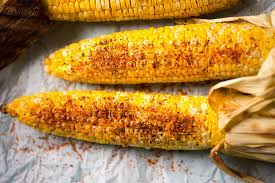

Zesty Tajin Corn

So, what is it?
This recipe is a no-fuss sidedish that's perfect with a smokey or spicy main dish.
What do you need?
How do you make it?
- Shuck and cook the ears of corn. You can gril them or steam them. Totally up to you.
- Once the corn is cooked, melt about 1 tablespoon of butter.
- Take the corn off the grill or out of the steam pot. Put on a heat safe plate and brush all sides with the butter.
- Sprinkly Tajin to taste. Don't be afraid to pile it on.
- Alternative method: If you don't like to eat corn off the cob, carefully slice the kernals off the cob with a chopping knife.
Put the corn in a bowl, and then mix in the butter and Tajin.